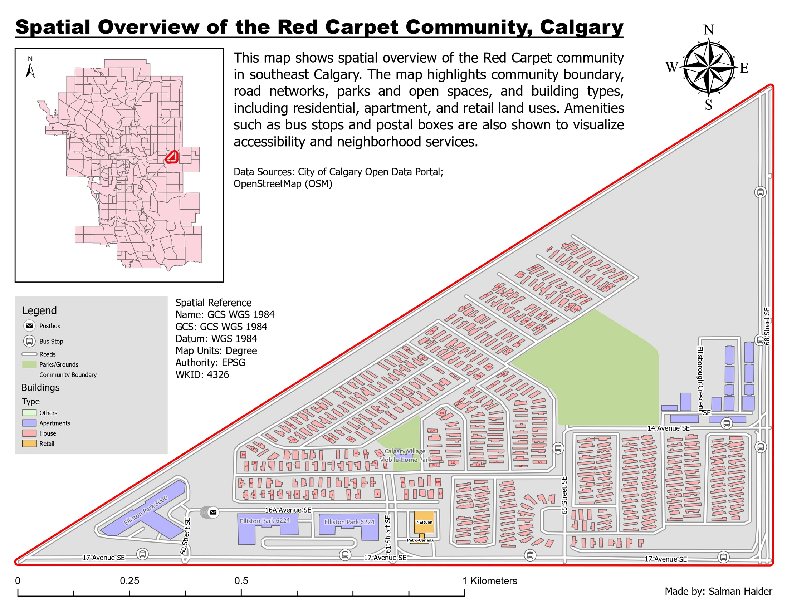

Cartography
Red Carpet community map
I wanted to make the Red Carpet community readable at neighbourhood scale: where the housing is, how the local streets connect, and where bus stops, shops and open space sit around them. I combined City of Calgary open data and OpenStreetMap features in one reference layout.
- Location
- Red Carpet, Calgary
- Data
- City open data and OpenStreetMap
- Output
- Neighbourhood reference map
Neighbourhood overview


Pink residential footprints fill much of the interior. Purple apartment buildings and bus stop symbols are more prominent around the edges, while green areas show open space among the housing.
Inspect details: Neighbourhood overviewBringing the local features together
I separated houses, apartments, retail and other buildings by colour, with green for parks and open space. Road labels and recognizable bus stop and postbox symbols make it possible to relate the land uses to particular streets.
The main view follows the community's triangular outline. I used the city inset to show its position in southeast Calgary, leaving enough space in the main map to read individual buildings.
What the neighbourhood view reveals
The rows of small houses inside the community contrast with the larger apartment footprints near its edges. Bus stops line the surrounding streets, and the mapped retail is close to 17 Avenue SE. These relationships would help a resident or someone reviewing the area orient themselves before examining a particular service or street.
The map shows where features are located. Bus stop locations alone do not establish service frequency or walking access, and building footprints do not tell us how many residents live there.
Data and references
- City of Calgary Open Data Portal
- OpenStreetMap contributors